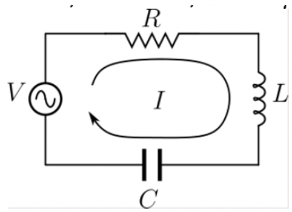
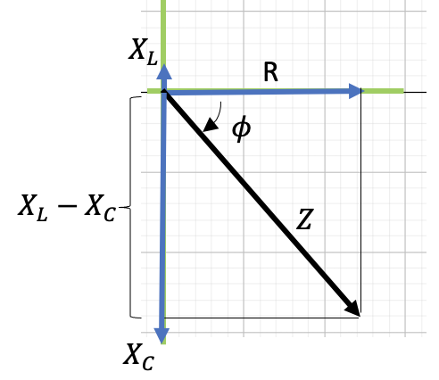
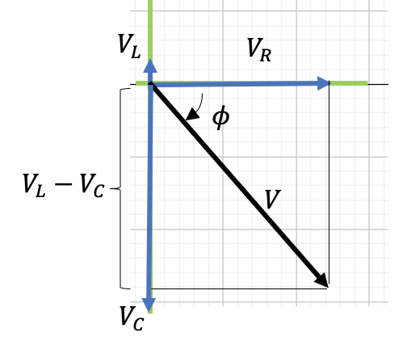

En el circuito RLC de la figura, el voltaje máximo del generador $V$ es 200 V y su frecuencia es de 50 Hz. Responda a las siguientes preguntas considerando que: $R = 25\,\Omega$; $L = 10\,\text{mH}$; $C = 100\,\mu\text{F}$.

Frecuencia: $f = 50\,\text{Hz}$
Voltaje máximo: $V = 200\,\text{V}$
Resistencia: $R = 25\,\Omega$
Inductancia: $L = 10\,\text{mH} = 10 \times 10^{-3}\,\text{H}$
Capacitancia: $C = 100\,\mu\text{F} = 100 \times 10^{-6}\,\text{F}$
Para resolver necesitamos calcular la oposición total al paso de la corriente ejercida por el circuito. Esto es la Impedancia $Z$ del circuito. Dada por la fórmula:
Como no disponemos de los valores de la Reactancia Inductiva $X_L$ y la Reactancia Capacitiva $X_C$; debemos calcularlas a partir de:
Finalmente, para calcular las Reactancias necesitamos tener la frecuencia angular $\omega = 2\pi f$
$R = 25\,\Omega$
$X_L = 3{,}14\,\Omega$
$X_C = 31{,}9\,\Omega$
Obs.: La fórmula de $Z$ resulta de aplicar Pitágoras al diagrama Fasorial

El diagrama debe ser hecho a escala
La corriente la obtendremos a partir de la relación $V = IZ$
Como el dato $V = 200\,\text{V}$ es el valor máximo o pico de la diferencia de potencial de la fuente la $I$ calculada es también el valor máximo de la corriente.
Para cálculos de potencia necesitaremos el valor eficaz (RMS):
Se utilizan las fórmulas:
Si sumamos aritméticamente: $131{,}3 + 16{,}5 + 167{,}5 = 315{,}3\,\text{V}$, que es mayor que los 200 V de la fuente. ¿Es esto un error?
¡No! Los voltajes en un circuito AC no se suman aritméticamente, sino fasorialmente (como vectores).
A modo de verificación, volvemos a calcular $V$ total. Partimos del dato $V = 200\,\text{V}$
Del diagrama Fasorial de Tensiones podemos calcular $V$ a partir de $V_R$, $V_L$ y $V_C$.

Sustituyendo los valores calculados:
Se puede calcular a partir de estos tres caminos:
Se necesita:
El Factor de Potencia se define:
El factor de potencia toma valores entre 0 y 1:
Como el circuito es capacitivo ($X_C > X_L$), para mejorar el factor de potencia habría que aumentar la inductancia $L$ o disminuir la capacitancia $C$.
$\omega = 314\,\text{rad/s}$
$X_L = 3{,}14\,\Omega$
$X_C = 31{,}9\,\Omega$
$Z = 38{,}1\,\Omega$
$\phi = -49° = -0{,}855\,\text{rad}$
$I = 5{,}25\,\text{A}$ (máximo)
$I_{ef} = 3{,}71\,\text{A}$
$V_R = 131{,}3\,\text{V}$
$V_L = 16{,}5\,\text{V}$
$V_C = 167{,}5\,\text{V}$
$P_m = 344\,\text{W}$
$FP = 0{,}66$ (capacitivo)